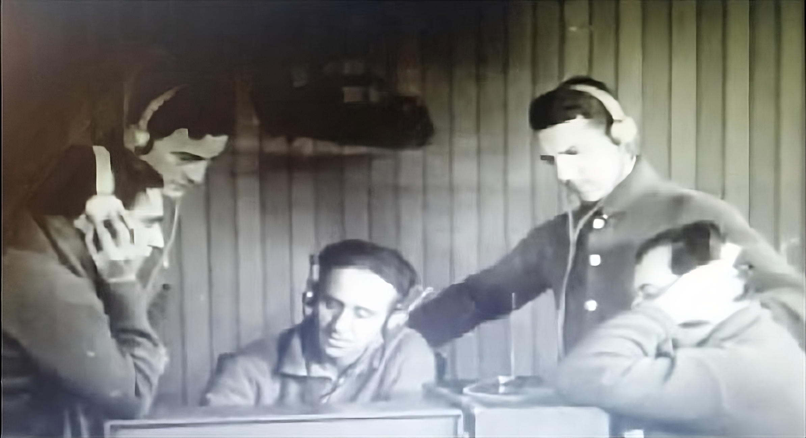

30/03/1927 primera comunicación telegráfica al continente
Este sábado estuve entregando un certificado a un contacto en HF desde LU1DAR en la banda de 40 metros (7 Mhz) Todos los nervios por ser mi primera salida en HF en algo oficial.
El radiooperador Emilio Baldoni había intentado infructuosamente el contacto radiotelegráfico durante once noches. Al fin, ese 30 de marzo, lo logró. “LRT LAT” comenzó a recibir, y después, “LRT LIK”, que significaba que la estación Ushuaia respondía. La primera comunicación radiotelegráfica del mundo desde la Antártida también fue un logro argentino.
extracto de la dirección de asuntos antárticos

Si bien las condiciones no fueron las mejores, logré hacer contacto con varias estaciones. Todo un logro personal podría decir y estuvo bueno para agarrarle más la mano.